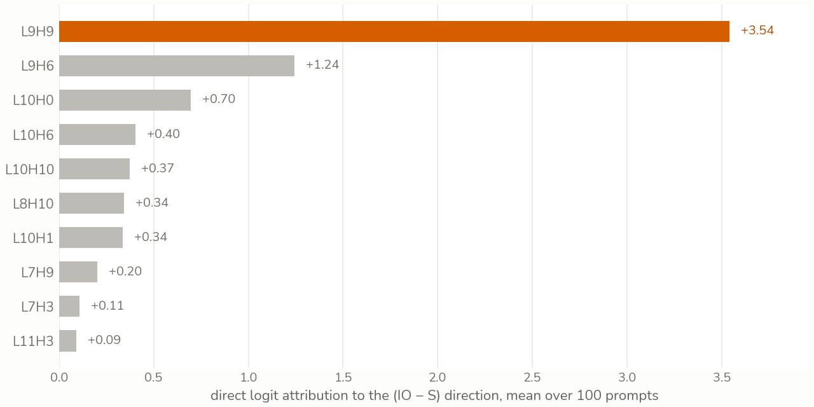
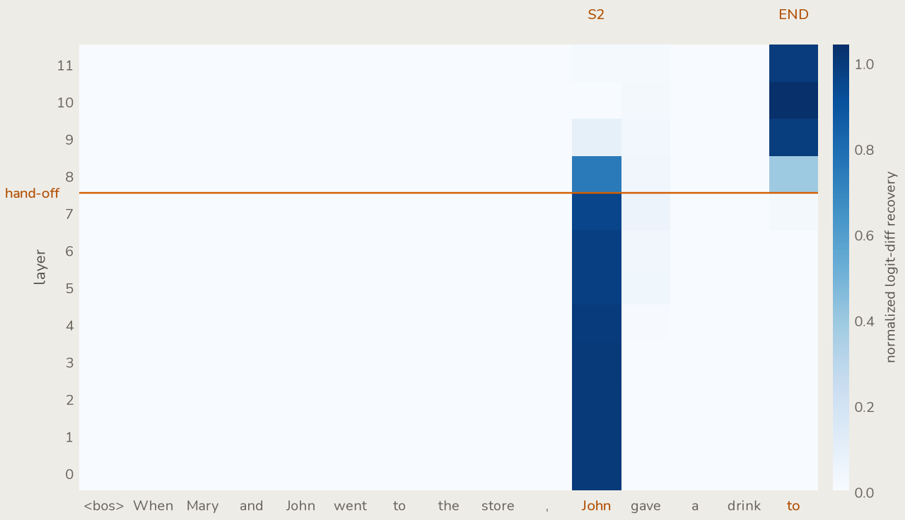
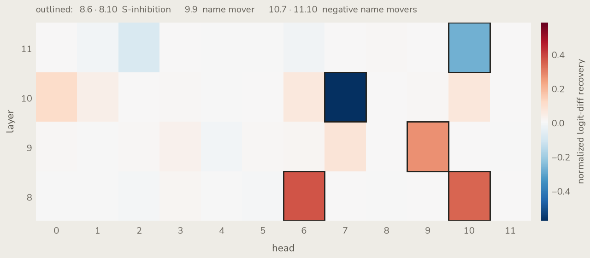
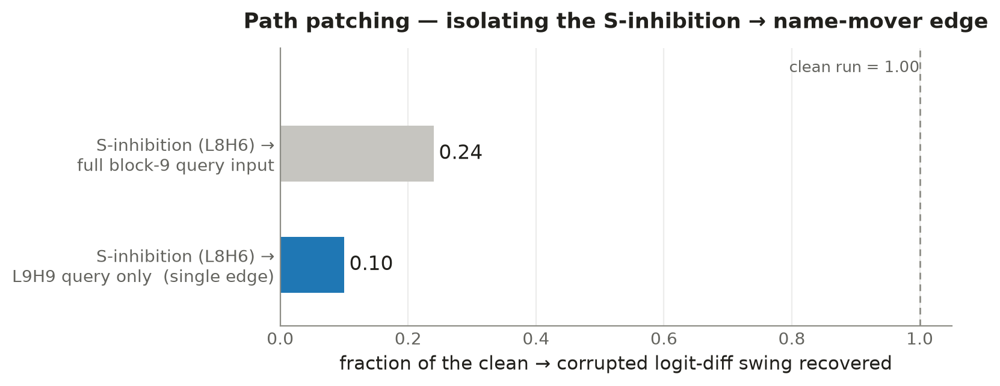
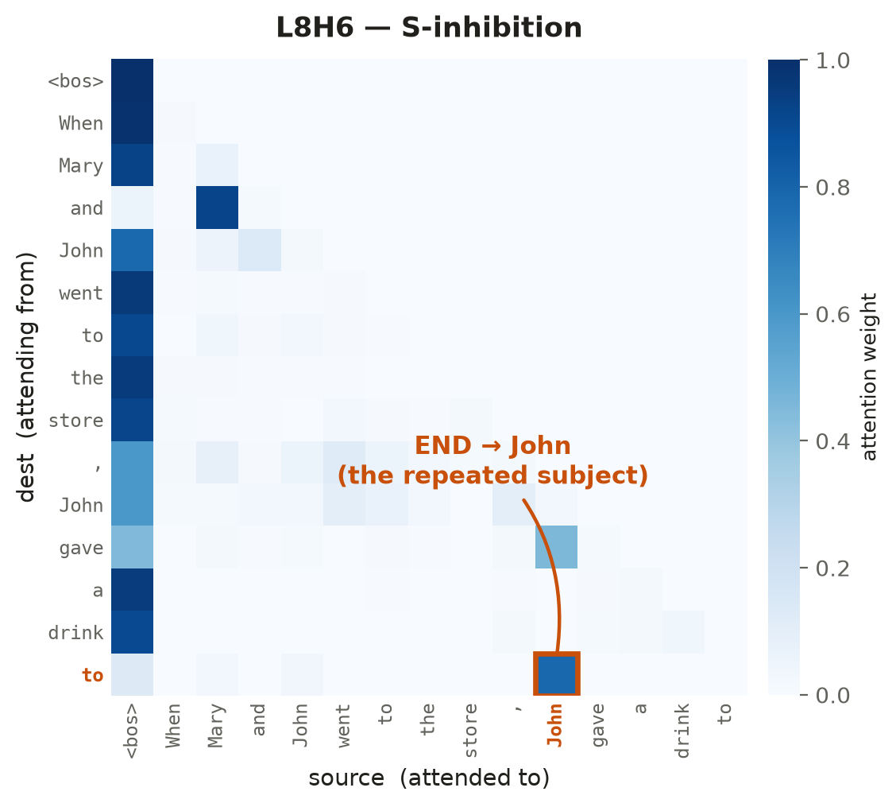
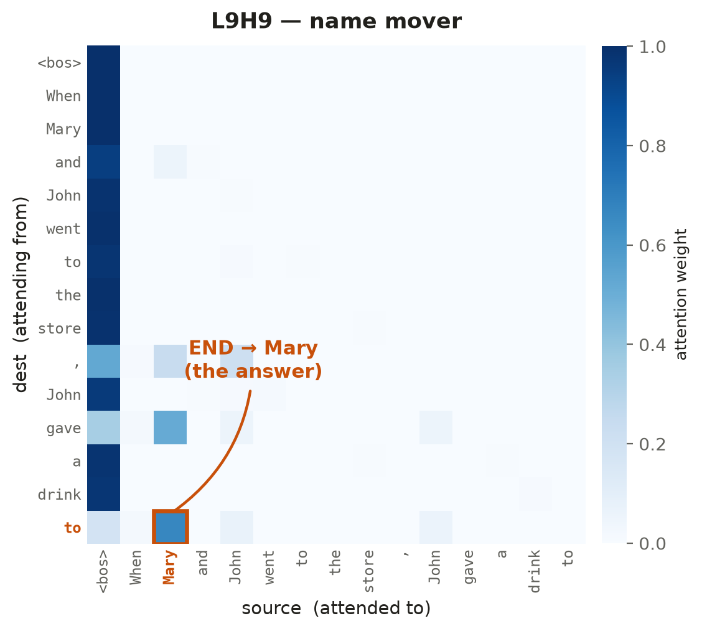

Every Method Has a Blind Spot: Reading GPT-2’s IOI Circuit Three Ways
Confident in the measurements — logit differences, recovery grids, attention patterns, all reproducible from the four notebooks in the repo. More exploratory where I read a circuit off a disagreement between methods. My second mechanistic interpretability post; corrections welcome.
Stack three interpretability methods on the same circuit and the temptation is to read their agreement as confirmation. The agreement is real. But the sharper signal is in the disagreement — each method reads one part of the circuit cleanly and is blind to the part the next one is built to see. This post walks the same GPT-2 circuit through direct logit attribution, activation patching, and path patching, and the through-line isn’t “I replicated IOI.” It’s what each method saw, and what it couldn’t.
The last post took a copying head apart from the weights — eigenvalues of an OV circuit, input-independent structure. This one works from the other side: activations, what a specific input actually produces. That seam between the two runs underneath everything here, and it shows up in the first result.
The task and the metric
The vehicle is Indirect Object Identification. Given
When Mary and John went to the store, John gave a drink to ___
the model should predict the indirect object Mary over the repeated subject John. Every run is scored by one number, the logit difference at the answer position,
\Delta = \operatorname{logit}(\text{IO}) - \operatorname{logit}(\text{S}) ,
which is +3.36 on that prompt and averages +3.86 across a hundred templated prompts, at 100% accuracy. GPT-2 small solves this cleanly; the question is how.
To get causal traction we need a corruption — a minimal edit that flips the answer. The one used throughout is the S2 swap: change the second John to Mary (“…the store, Mary gave a drink to”), which makes John the intended answer and drives \Delta to -2.48. Everything downstream is measured as normalized recovery against those two poles,
\text{recovery} = \frac{\Delta_{\text{patched}} - \Delta_{\text{corrupted}}}{\Delta_{\text{clean}} - \Delta_{\text{corrupted}}} ,
so 0 means the intervention did nothing and 1 means it fully restored clean behavior. One metric, three ways of attributing it.
Direct logit attribution: who writes the answer
The cheapest question first. Which heads write directly into the logit difference? DLA decomposes the residual stream at the answer position into per-component contributions, maps each head’s output back through its W_O, applies the final LayerNorm scaling, and projects onto the answer direction W_U[:,\text{IO}] - W_U[:,\text{S}]. No interventions, one forward pass, and the per-head projections sum back to the total \Delta — a clean ranking of direct responsibility.
The name-mover head L9H9 dominates, at +2.35, with L9H6 a distant second at +0.96. Everything else is noise by comparison.

Here is the seam with the last post. In the weights-only view, a head’s copying strength is the copying score — and by that metric L9H9 scores 0.26, near the bottom of all 144 heads, while genuine high-copiers like L11H3 sit at 1.00.
The weight-only reading would have walked right past the single most important head in the circuit, because the copying score measures copies what it attends to, not attends to the right thing. DLA finds L9H9 precisely because it folds in the actual attention on this input. Structure in the weights is not the same as structure that gets used.
What DLA cannot do is see anything that doesn’t write straight to the logits. It found the name movers and stopped, because the heads that feed the name movers contribute nothing directly to the answer direction — their effect is routed through L9. To see them, the measurement has to become causal.
Activation patching: what’s necessary, and when
Activation patching runs the corrupted prompt but splices a single clean activation back in, one location at a time, and scores the recovery. Where DLA sees only direct writes, this catches components whose effect is routed through later layers — the price is a forward pass per location instead of one.
The first sweep patches the residual stream across every (layer, position). It answers a question no static weight reading can even phrase: not just where the answer-relevant information lives, but when.

The handoff is the whole story. Early layers carry the answer information at the repeated-name position; around layer 8 it migrates to the END position and rides the residual stream out to the logits. That is a temporal claim — information living in one place, then another — and it is the clearest thing patching buys over reading weights, which can only ever describe a static map of what a head could do.
The second sweep localizes heads: patch each head’s output at END and measure recovery.

This is where the methods start to disagree in a way that’s informative rather than annoying. DLA read the name movers cleanly and barely registered L8. Patching reads L8 cleanly and understates the name movers. Neither is wrong — each is bright exactly where its own machinery is sensitive. Put them side by side and you get the roster the paper predicts: S-inhibition at L8H6 / L8H10, name movers around L9H9, negative name movers at L10H7 / L11H10.
But patching localizes nodes. It tells you L8 matters and L9 matters. It does not tell you that L8 matters by talking to L9 — that the edge between them is real and not two independent contributions that happen to co-occur. For that you need to hold everything else still.
Path patching: the wire itself
Path patching isolates a single sender → receiver edge. The hypothesis, handed up by the previous two sweeps, is that the S-inhibition heads feed the name mover. Testing it took the most care of anything here — my first attempt quietly rebuilt plain activation patching, because patching the sender and reading the output lets its effect flow down every path, not the one edge I wanted.
The real construction freezes everything. Run clean and corrupted, caching both. Then re-run with every head and MLP frozen to its clean value except the sender (L8H6, set to corrupted), so the sender’s effect propagates but nothing else moves.
Grab the resulting input to the receiver — the query into the L9 name movers — and stash it. In a final run, patch only that stashed query into blocks.9.attn.hook_q and score. Freezing everything but the sender is what turns a node measurement into an edge measurement.

Patching the whole block-9 query input recovers ~0.24 of the effect; restricting the path to L9H9’s query alone recovers ~0.10. So roughly a tenth of the entire clean→corrupted swing flows specifically along the L8H6 → L9H9 query edge, and about a quarter along the full S-inhibition → name-mover family. This is the thing DLA had to ignore and node-patching could only assume: a measured edge, not a co-occurrence.
Verification: do the labels hold?
Head numbers matching a paper’s head numbers proves nothing on its own. If the labels are right, the attention patterns should show each head reading what its name claims.

John, the repeated subject. An S-inhibition head reads the duplicated name; that is what it is for.
Mary — the indirect object, the answer. The name mover copies the correct name to the output position. Together the two panels trace the edge path patching measured: L8H6 reads the repeat, L9H9 writes the answer.The BOS column is the honest caveat here. It dominates both maps, and reading these patterns means deliberately looking underneath it — an easy way to see a signal that isn’t there, or miss one that is. With that discount applied, the labels hold: 8.6 reads the subject, 9.9 writes the object, and the circuit the three methods reconstructed is the circuit the attention shows.
Four views, one circuit
Nothing here contradicts anything else. The methods agree on the answer. What they don’t share is their blind spots, and lining those up is the actual result:
| Method | Gives you | Blind to |
|---|---|---|
| Weights (last post) | input-independent structure | what a given input actually uses |
| Direct logit attribution | direct contribution to the logits | anything routed through later layers |
| Activation patching | causal importance, and a temporal story | the wiring between components |
| Path patching | the sender → receiver edge | — but needs the most careful construction |
Read top to bottom, each row’s blind spot is the next row’s headline. Weights miss what’s used; DLA finds what’s used but only at the output; patching finds the upstream heads but not their wiring; path patching supplies the wiring. The copying score buried L9H9; DLA surfaced it but couldn’t see L8; patching surfaced L8 but couldn’t prove it feeds L9; path patching drew the edge. You don’t get the circuit from any single method. You get it from knowing what each one can’t tell you, and reaching for the one that can.
The four notebooks — DLA, activation patching, path patching, and the attention-pattern checks — are in the repo; everything above is reproducible from them on CPU.